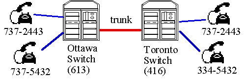

Revisions:
Rev 1: clarified the wording of problem 3 to relate it more to the sample phone switch database.
All assignments must be submitted using culearn by the due data and time. No other assignments will be accepted or marked.
For written assignment, like this one, you MUST submit your assignment as .pdf documents. Don't just submit a bunch files and expect the TA to figure out what they mean and what order they should go in. They must be part of an organized document.
TA's) Their assignment must be in .pdf format Their document must be organized, not just a bunch of scattered files. If it is not an organized document and just a bunch of files then don't mark it and give a mark of 0.
There are many possible answers for each question. You will have to use your judgement. Use the specific numbered requirements to judge their answers.
Some solutions will be efficient in that they would not require many nulls in tables but probably have expensive tables. Others might build tables that would have a lot of null values in them. In this assignment we are not judging efficiency yet, we just care that all the necessary information is there and that the data and relationships are clear. (I may provide sample ER diagrams and table schema for some questions but their answers might be different and work just as well.)
Marks Breakdown
1A E-R diagram 5 marks (requirements R1.1-R1.5)
1B Schema 5 marks (requirements R2.1-2.5)
2A E-R diagram 5 marks (requirements R1.1-R1.5)
2B Schema 5 marks (requirements R2.1-2.5)
3A E-R diagram 5 marks (requirements R1.1-R1.5)
4A E-R diagram 5 marks (requirements R1.1-R1.5)
4B Schema 5 marks (requirements R2.1-2.5)
4C Scenerio Description 5 marks
(For the Scenerio, rate their description
from 1-5 as to how well they described their application area and to what extent it allows you to understand their E-R model.)
Problem 5 [10 marks]
Total = 50 Marks.
I have numbered important requirements below so you can refer to a requirement # in the marking comments for the students(e.g. "R1.3 was not met").
For this part you will produce E-R diagram data models and initial relational table schema for the situations described in the problems below. Question 1 is typical question from a past exam. Question 2 relates to the data you have been working on for assignment #1 and question 3 relates to the telephone switching database we will use throughout the course and question 4 is based on your course project database.
For each question in part 1 you must provide the following. (Question 4 will also require a revised scenario description.)
1) Write down any important assumptions you make about the data (e.g. what is unique, what pertains to an individual or group, etc.) that will help the marker understand your diagram.
2) An E-R diagram for the data model satisfying the following requirements.
Mark the E-Rdiagrams out of 5 [1 mark per requirement R1.1 - R1.5].
R1.1 All strong entities (boxes) should show attributes and identify the key by underlining the primary key attributes. (You can use "bubbles" for
attributes or list them in the entity box.)
R1.2 Weak Entities, if any, should be identified as such with a double bordered box, show the descriminator attributes and also show the with a double bordered diamond the relationship that provides the borrowed portion of the key. (If their design does not require weak entities then consider this requirement met.)
R1.3 Relationships should be shown with a diamond shape, have a name and show relationship
cardinalities (1:1, 1:N, N:N). If inheritance is used then it should appear on the E-R model.
R1.4 Relationships must correctly show compulsory vs. optional
participation of entities in relationships.
R1.5 There should be no unnecessary entities or relationships. That is, the design should not be more complicated than it needs to be. It is common when learning E-R modeling that people come up with models that are way more complicated than necessary.
3) Mark the Table Schema out of 5 [1 mark per requirement R2.1 - R2.5]
Deduct 1 mark each if any of the following is not met, and deduct other marks if as you judge necessary.
R2.1 Their schema must
correspond to their E-R diagram. Strong and
weak entities each map to their own table (except if a table completely contains
another which can happen if you have a chain of weak entities).
R2.2 All 1:1 and 1:N
relationships are implemented by adding attributes to existing entity tables. All N:N relationships
are implemented as their own tables.
R2.3 Inheritance
relationships are implemented by producing individual tables for the sub-class
entities. (If necessary you may produce a table for the superclass entities as well.)
R2.4 Each table in your
schema should have a name and clearly show all the attributes and have the attributes that make up the
primary key underlined.
R2.5 Each table should
indicate any foreign key relationships with other tables. You can do this by drawing arrows on the schema if you want or using text.
Consider a Database that keeps track of scenes filmed for different movies. The database should keep track of all the information mentioned in this scenario. Ask questions in class if you are unsure about what to keep track of.
A movie uses a screenplay (or story) that is organized into scenes. The movie will also have the same scenes because the movie follows the screenplay.
Not all screenplays in the database become movies but we want the database to keep track of all the screenplays regardless. The database should keep track of the screenplay title and author.
Every movie is of a particular screenplay. Also, a screenplay is used for only one movie. That is, there are not two different movies made of the same screenplay.
Scenes have a story-location where the story takes place and a filming-location where the filming will actually be done. Each scene has some actors that appear in that scene. Actors have a name, phone number, address and agent that represents them.The database should keep track of which actors are needed for which scenes so it can be used to make up the shooting schedule.
A scene can be filmed more than once (maybe the actor forgot their lines). Each filming of a scene is called a “Take”. The movie is typically created by using the best take of each scene and putting them together. The database should keep track of the "cutlist" which is the list of takes that make up a particular movie and the order in which the takes appear. (In reality a movie is cut with partial takes but for this exercise we will assume complete takes are used to make up the movie.)
In assignment #1 you provided a script to populate a table of fake book songs. It was intended to provide an indexing database for music students. Now we want to model a database that will make use of this information and also the additional information needed to support an intended application as described below.
Here are the details.
Musicians use "fake books" to play and improvise from. We want to create a database that will use the indexing information provided in assignment #1 an support the following.
The users (musicians) will upload their own copies of .pdf books to the application. The books supported will be those that appear with the indexing data (books in the bookcodes table from assignment #1). When a musician has uploaded a book they will have the right to be shown pages of that book using the indexing data in the database. The musicians will only be allowed to see the books they have uploaded, but they can search all of the indexing data. For copyright and legal reasons they will not be allowed to see contents from other user's books. If two musicians upload the same identical book in theory the app need only keep one copy but for legal reasons individual copies must be kept. Also even if musicians uploaded what is supposed to be the same book, some will include the cover page and foreword and some won't so the scans may not be identical.
The indexing information should provide the books and page numbers for the various songs in the books. Song information should include the song's title, composer(s), book, page number, and length in pages. Each uploaded book should also have some kind of offset information to account for introductory pages, missing forewords etc. That is, if the song is indexed to be on page 1 but that is the 10th page of a particular user's scanned .pdf book then an offset should be stored in the database to account for this.
The database should store information about the books which includes their book code (unique), title, publisher, and date of publication and the individual copies of that book uploaded by the various users.
The database should support a collection of users. Users have a name, email address, userid, password. The database must keep track of which books which users are allowed to access. The application will require users to login with user id and password and only let them see data once their userid and password is verified.
Design an E-R model for this database. You will have to make decisions about attributes and keys. If you don't think it is clear what your attributes mean then provide some notes and assumptions to go with your design. It is expected that this question will require classroom discussion to clarify what is required. Make sure to ask lots of questions.
In a previous term students were asked to analyse the following situation and design a database to model it. The actual database constructed is provided an sqlite database telephone_switch.db in the sample database section of the course notes (use the latest revision). It is intended to support the situation described below.
Open that database and examine the schema of the tables and familiarize yourself with it. We will use this database for tests and assignments in the course. For the problem we want you to reverse engineer the database and come up with an E-R model of it. The original database was designed from an E-R model, but then tables were changed several times as the database was altered and no longer corresponds to the original model.
Read through, and understand, the scenario below and develop the E-R model of the database that has been implemented for it.

A telephone switch is a computer that has lines and trunks connected to it and can make internal connections between two lines, a line and a trunk, or two trunks. A line connects a telephone to the switch; a trunk connects two switches together. The interconnected switches form a telephone network. A line can only support, or carry, one conversation, but a North American T1 twisted-pair trunk can carry 24 conversations (it multiplexes 24 conversations on a single pair of copper wires). The different conversations on a trunk are identified by channels. A T1 trunk has 24 logical channels (numbered 0 to 23).
Note that lines can be considered as "mini trunks" with 1 channel. That is, it might be convenient to think of lines as also having a channel number even though they only have one channel -this is how the implemented sqlite database views them.
Lines and trunks both connect to the computer using a hardware interface card. A switch can have up to 60,000 lines and up to 5000 trunks connected to it. Anything that connects to the switch is called a facility; so lines and trunks are instances of a facility. Each facility interface has a unique logical identifier, called portID.
When you rent a phone line from the service provider it is assigned a directory number (e.g. 613 737-2443). The renter is called a subscriber. Subscriber details like name, address, email, are stored in the database.
In North America telephone directory numbers are 10 digits long. In a directory number, like 613 737-2443, the first three digits (613) are called the area code and traditionally designates some geographic part of a province or state. The next three digits are the office code. Office codes can be reused within different area codes. For example 613 737-2443 could be a number in Ottawa where as 416 737-2443 might be a number in Toronto. The last four digits are the station code and used to identify an phone line.
To make a call you go off-hook on your phone line and dial the number of the line you wish to reach. If the call is to another line on the same switch the two lines are interconnected by the switch software. If you dialed the number of a phone on another switch, a trunk must be selected which will carry the conversation to another switch. The process of choosing the appropriate trunk is called routing and is described below.
Trunk routing works like this. Trunks are assigned routing area and routing office codes. A trunk with a routing area = 613 and routing office = 232 is willing to handle any call going to a phone number 613 232-XXXX. A trunk with routing area = 613 and routing office = 000 will handle any call going to the 613 area code. A trunk with routing area = 000 and routing office = 000 will handle a call to any number.
So to route a call the switch must consult the database and determine if the dialed number is among those of its own lines and if so the call will be connected. If the dialed number is not one of the lines of the switch the software will use the database to select an appropriate set of trunks and choose one of the available ones. The prefered trunk would be one that has a matching routing area and routing office as the dialed digits, the next preferred trunk would match the routing area and with routing office = 000 and finally the last resort trunk would be one with routing area = 000 and routing office = 000. I any case, a trunk can only be used if it still has an idle channel available.
The person, or line, who originates the call, and dials the digits is called the originator. The line or trunk to which the call gets connected is called the terminator. Trunks can also be originators (in this case the dialed digits are coming from another switch from the other end of the trunk).
If the called line you are trying to reach is already busy on a call or no idle channels on the desired trunks can be found the caller receives a busy treatment (a tone or announcement). There are other kinds of treatments for an incorrectly dialed number, or service not being available etc. (For a call which uses a trunk both the called digits and the callers digits are sent over the trunk to the next switch so the next switch can do routing using its own database.) So treatments are recorded messages that can be played over the phone line for the originator to hear. Treatments, which are also instances of facility, have their own portID just like a line so a call can be connected to a treatment channel just like it can be connected to a line channel.
The switch developer wants to put all data need to support making calls in a relational database. The data should provide information necessary to identify lines and trunks, determine if they are busy or have idle capacity, have a record of all calls currently in progress, have the data necessary to make routing decisions and select approriate trunks based on the origintors dialed digits. The customer wants to be able to see all calls currently in progress including who the originator and terminators are (their portID) and channels being used. The customer also may want to query who the actual customer is: their name, address, email etc.
This question contains lots of technical information and industry jargon. It is expected that you ask lots of questions in class to help clarify things. We will use this example throughout the course so you should become really familiar with it.
Here is a possible schema for a database implemented to support this scenario. Study the schema and explore and the actual database telephone_switch.db provided in the course notes sample databases section using the sqlite3 console application. Then, come up with an E-R model that you think properly reflects the scenario (and the implemented database). Since an actual database exists we are, in effect, doing some reverse engineering in coming up with an appropriate E-R model.
This course has a project component. That is,
an ongoing design of your own choosing. You are going to build your own
database about something that interests you. In assignment #1 you provided a brief scenario and proposal for something that interests you. Now you want to create the first model of your database. Later in the course
you will build this with SQLite and populate it with data. We will use this modeling opportunity to discover if your proposal is too simple to use as a course project. [Marking note: their model should be roughly the complexity of problem 2 and must contain at least one N:N relationship. If it is too simple give a mark of 0 for the E-R model and ask the student bring you a revised proposal.]
For this problem you must re-write the scenario to describe what your database will be about, and then come up with the proposed E-R diagram and initial table schema as for the previous practice questions. You wrote a description in the previous assignment but we want you to repeat it here. This will give you a chance to make modifications and to make sure the information is here for whoever is marking your E-R model. (If it has not changed from assignment #1 then just copy and paste it here again.)
For part 2 we want you to run a demonstration application based on node.js then make some simple modifications to get familiar with the code. You will use this code as a base for later assignments. Basically we will have you replace the database included and use the one with assignment 1 data instead.
The demonstration code is included in the folder SQLite Nodejs Webapp and it contains the sample database of 1200 jazz standards. To run this code you must install node.js (and npm) on your computer. See the section of the course nodes that discusses installing node.js: notes/02C Node and NPM Installation.
After installing node.js verify that it and npm are installed by following the instructions in the installation notes. Basically you need to execute the following two commands in a command line terminal window on your machine:
node -v
npm -v
Node should be at version v8.x.x.
To run the demo code you first need to install the npm (node package manager) modules needed (you need to be connected to the internet for this). Those are specified in the package.json file. Open a command terminal to the directory where the demonstration code is located and execute
npm install
That will read the required modules specified in the package.json file and install those modules from the internet. This will create a node_modules directory which you should see:

To run the node server execute:
node server.js

Use a Chrome browser to visit the indicated websites. The first time you visit a site from the browser it will prompt you for a userid and password. This has to be one of the users contained in the sqlite database users table. The sqlite3 database is in the data directory of the demo code. (A hard coded user: ldnel and password: secret is added to the database when the server launches in case there are none already there.)
You can see the users by visiting http://localhost:3000/users

You can see all the songs that have the substring "Girl" in the title by executing visiting
http://localhost:3000/songs?title=Girl

You can click on one of the song links to see the songs details including the chord changes:

See that the code runs and them make the following modifications.
Marking: 10 marks -two per requirement below (0 for not done, 1 for partially done, 2 work implemented and working).
R5.1 Modify the code so it uses the fakebooks3005fall2018.db database supplied with the assignment. instead of the db_1200iRealSongs database that's in the data directory in the demo code. Note: while the assignment is ongoing we will replace the fakebooks3005fall2018.db database file with updated copies obtained from the marking of assignment 1. You should grab the latest version just before you submit this assignment 2.
R5.2 Modify the fakebooks3005fall2018.db database, or the server code code, so that you appear among the users in the users table of the database. You should show up if we visit your server at http://localhost:3000/users

R5.3 Modify the server code as needed so the visiting http://localhost:3000/songs will display the songs as hyperlinks with rowid and song title shown. Note here we will be using rowid which is the hidden column in all sqlite database tables as the identifier of a song. You should limit the answer to, say, 30 entries when doing your sql query.

R5.4 Modify the server code as needed so that visiting http://localhost:3000/songs?title=Best will display the song links of songs whose title contains the substring "Best" for example. (The search should not be case sensitive which is the default sqlite behaviour.)

R5.5 Modify the server code as needed so that when you click on one of the song hyperlinks you see the song's details. (This should also work if you visit http://localhost:3000/song/rowid). The song details should include the rowid, song's title, composer, bookcode, page, length, and the student number of the student who submitted the data.

Submit your modified server code including the latest database it should run against in the code's data directory. Also feel free to play with the html tags and make the web page formatting more attractive.
IMPORTANT: when submiting your code first delete the node_modules directory. The marking TA will re-install the modules needed. In short: never include the node_modules directory when you submiting code.